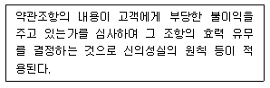
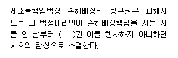
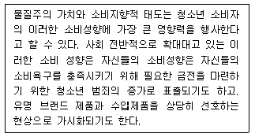
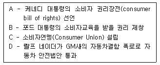
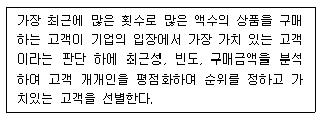
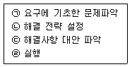
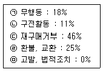

소비자전문상담사-2급 (2016-03-06 기출문제)
1과목: 소비자상담 및 피해구제
1. 다음 중 기업 측면에서의 소비자상담 필요성으로 가장 거리가 먼 것은?
- 고객유지율을 증가시켜 이윤을 높일 수 있다.
- 좋지 않은 평판을 미리 막을 수 있다.
- 고객의 불평을 잘 해결하여 법적 비용을 줄일 수 있다.
- 소비자기본법상 소비자상담기구 설치의무를 이행할 수 있다.
(정답률: 53%)

2. 소비자가 제품을 구매할 때 기업의 소비자상담사가 해야 할 가장 적절한 역할은?
- 경쟁기업의 상술에 대해 주의를 주고 자사제품의 우수성만을 설명한다.
- 객관적인 의견과 전문적인 지식에 근거하여 능동적인 대화로 정보를 제공한다.
- 기업의 이익을 창출하기 위해 소비자를 현혹시킬 수 있는 대회기법을 개발한다.
- 기업에 유리한 지불결제방법을 소비자가 선택하도록 권유한다.
(정답률: 73%)
3. 소비자상담사의 용모와 복장으로 가장 적합하지 않은 것은?
- 보편타당한 것으로 자신의 개성을 나타낸다.
- 업무관리에 효율적인 용모와 복장이 되도록 한다.
- 자신의 인격과 근무하는 기관의 이미지를 고려한다.
- 유행에 뒤지지 않도록 유행에 따르는 복장을 한다.
(정답률: 69%)
4. 소비자단체 및 한국소비자원에서 구매 전 소비자상담을 할 때 다루어져야 할 내용이 아닌 것은?
- 구매선택과 관련된 평가기준에 대한 정보와 조언
- 판매점, 가격 등에 대한 시장정보 제공
- 대체안의 존재와 특성에 관한 정보 제공
- 가격과 품질 면에서 가장 우수한 특정 브랜드 지정
(정답률: 54%)
5. 미성년자가 법정대리인의 동의 없이 초고속 인터넷 서비스 사용계약을 체결하였을 때 소비자분쟁 해결기준에서 정하는 보상기준은?
- 손해배상
- 계약취소
- 위약금 50% 지불 후 계약해지
- 위약금 없이 계약해지
(정답률: 67%)
6. 비교적 상황을 알기 쉽고, 불만상품이나 계약서 등 관계자료를 가지고 상담하므로 직접 합의주선처리를 시작하는 것이 가능한 것은?
- 방문상담
- 문서상담
- 팩스상담
- 전화상담
(정답률: 63%)
7. 기업의 소비자상담 결과의 활용에 대한 내용 중 틀린 것은?
- 소비자 상담 내용은 자료로 구축 정리하여 분석하고 경영진에게 보고한다.
- 매장관련 불친절이나 불만은 해당 매장에 통보하며, 매장별 상벌을 시행하는 것도 필요하다.
- 소비자불만 처리의 모든 과정에 최고경영자가 참여하여야 한다.
- 소비자불만 및 건의사항이 관련 부서에서 반영 및 개선하도록 한다.
(정답률: 73%)
8. 방문판매 등에 관한 법률에 따른 다단계 판매자의 금지행위에 해당하지 않는 것은?
- 계약해지를 방해할 목적으로 계약 상대방에게 위력을 가하는 행위
- 거짓 또는 과장된 사실을 알리거나 거래를 유도하는 행위
- 허위 판매원에게 재화 등을 강제로 판매하는 행위
- 허위정보를 제공하거나 청약철회를 권고하는 행위
(정답률: 36%)
9. 소비자상담 시 효율적인 경청방법은?
- 평가적 경청
- 여과적 경청
- 동정적 경청
- 공감적 경청
(정답률: 73%)
10. 고객관계관리(CRM)에 대한 설명으로 틀린 것은?
- 19세기 후반에 단기수익의 극대화를 목적으로 한 카탈로그 마케팅에서 시작되었다.
- 기존고객이 상대적으로 중요해지고 개별고객에 대한 전략 수립의 필요성이 증대되었다.
- 모든 고객들에게 제공되는 서비스의 전반적 수준 향상을 의미한다.
- 고객유지율 제고를 통한 고객 평생가치의 극대화를 목적으로 한다.
(정답률: 29%)
11. 상담의 핵심 원리라고 할 수 없는 것은?
- 관심 기울이기
- 경청하기
- 존중감 나타내기
- 평가적 자세로 듣기
(정답률: 67%)
12. 소비자분쟁해결기준에 대한 설명으로 가장 적합한 것은?
- 중고물품 등에 대한 품질보증기간은 품목별 분쟁해결 기준에 따른다.
- 소비자의 귀책사유로 계약이 해제ㆍ해지되는 경우 경품류의 경우 사업자가 선정하는 가격으로 지급하여야 한다.
- 교환받은 물품 등의 품질보증기간은 최초 구입일로부터 기산한다.
- 품질보증기간이 소비자분쟁해결기준에 없는 경우 그 기간을 6개월로 한다.
(정답률: 40%)
13. 소비자 상담 단계와 기법 및 전략이 틀린 것은?
- 상담의 준비 단계 - 가장 기본적으로 준비되어야 하는 것은 정형화된 스키립트이다.
- 실제 상담처리 단계 - 일반적으로 제품 문의는 즉석에서 그에 대한 정보를 제공한다.
- 접수된 상담의 처리 분류 단계 - 상담의 내용에 따라 문의 및 칭찬으로 구분된다.
- 자료수집 단계 - 소비자상담에 필요한 자료들의 수집과 소비자와 관련된 정보의 수집이 있다.
(정답률: 65%)
14. 소비자분쟁해결기준에서 정하고 있는 일반적인 보상기준이 아닌 것은?
- 사업자가 품질보증서에 품질보증기간을 표시하지 아니하였거나 해당 품목에 대한 품질보증기간이 소비자분쟁해결기준에 없는 경우 유사제품의 품질보증기간을 적용한다.
- 별도의 품질보증서를 교부하기가 적합하지 아니한 경우 소비자기본법에 따른 소비자분쟁 해결 기준에 따라 피해를 보상한다는 내용만을 표시할 수 있다.
- 할인판매기간에 할인된 가격으로 구입한 제품의 환급은 구입당시의 가격을 기준으로 환급한다.
- 물품 등에 대한 피해의 보상은 물품 등의 소재지나 제공지에서 하지만, 사회통념상 휴대가 간편하고 운반이 쉬운 물품 등은 소비자의 소재지에서 보상할 수 있다.
(정답률: 28%)
15. 국가 및 지방자치단체가 소비자의 기본적 권리 실현을 위해 필요한 행정조직의 정비 및 운영 개선의 책무가 있다고 규정한 것은?
- 민법
- 소비자기본법
- 소비자분쟁해결기준
- 약관의 규제에 관한 법률
(정답률: 59%)
16. 소비자의 일반적인 욕구에 관한 기술 중 가장 적절한 것은?
- 친절한 서비스를 받기 위해서는 시간을 지체시켜도 된다.
- 소비자는 자신의 문제에 대해 공감 받지 않는다.
- 소비자는 자신을 개인적으로 알아주고 정성이 담긴 서비스를 제공받길 원한다.
- 고객들은 문제에 대해 잘 이해해 주지 않더라도 직위가 높은 사람이 처리해 주면 만족한다.
(정답률: 60%)
17. 정액 감가상각에 의한 현금보상액을 산정하기 위해 필요한 정보가 아닌 것은?
- 구입가격
- 내용연수
- 사용연수
- 품질보증기간
(정답률: 50%)
18. 성공적인 전화 상담을 위한 “스크립트”에 대한 설명으로 가장 거리가 먼 것은?
- 말할 내용을 연극의 각본처럼 미리 준비해 두는 것을 의미한다.
- 전화상담 상황별로 필요하다고 예상되는 내용을 미리 연습하기 위해 작성해 놓은 문장이다.
- 스크립트를 이용한 전화상담은 대면상담 상황에서도 활용 가능한 다양한 언어적∙비언어적 기법들을 모두 포함한다.
- 상담사는 스크립트를 효과적으로 활용하고 익숙하게 구사할 수 있도록 사전 연습과 훈련이 필수적이다.
(정답률: 57%)
19. 소비자 행동스타일에 대한 설명으로 틀린 것은?
- 자신이 선호하는 방법이 아니라 보편적으로 선호하는 방식으로 고객에게 서비스를 제공하도록 노력하여야 한다.
- 보통사람들의 행동스타일은 단호한, 호기심 많은, 합리적인, 표현적인 유형으로 구분하며 행동경향의 절대적 지표로 사용한다.
- 사람들이 어떤 일을 할 때 또는 사람들을 대할 때 보여주는 지속적인 어떤 경향이다.
- 자기평가 설문지를 이용하여 행동스타일을 확인하고, 자신의 경향을 파악함으로써 이와 비슷한 타인의 경향을 파악할 수 있다.
(정답률: 43%)
20. 방문판매의 청약철회에 대한 설명으로 옳은 것은?
- 방문판매로 인한 청약철회 기간은 계약서를 교부받은 날로부터 7일 이내이다.
- 청약철회를 한 경우, 방문판매자는 재화를 반환받은 날로부터 3영업일 이내에 지급받은 대금을 환급해야 한다.
- 낱개로 밀봉된 음반, 비디오물 및 소프트웨어를 사용한 경우에도 청약 철회가 가능하다.
- 청약철회 시 공급 받은 재화의 반화에 필요한 비용은 소비자가 부담한다.
(정답률: 45%)
21. 분쟁조정기관에 의한 조정의 효력이 다른 것은?
- 금융위원회의 설치 등에 관한 법률에 따른 금융분쟁조정위원회
- 소비자기본법에 따른 자율적 분쟁조정
- 개인정보법에 따른 개인정보분쟁조정위원회
- 전자문서 및 전자거래기본법에 따른 전자문서ㆍ전자거래 분쟁조정위원회
(정답률: 54%)
22. 소비자불만 유형 중 악덕 소비자로 보기 가장 어려운 유형은?
- 성적으로 모욕을 주는 발언을 하거나 음란사진, 메시지 등을 발송하는 소비자
- 고의로 음식에 이물질을 넣거나 상품을 스스로 파손하는 등 거짓으로 손해를 주장하는 소비자
- 상담업무담당자에게 폭언이나 욕설을 하는 소비자
- 기업의 소비자상담실에 불만을 접수하고 소비자단체나 소비자원에 불만을 제기하는 소비자
(정답률: 69%)
23. 소비자단체가 하는 소비자상담의 기능만으로 구성된 것은?
- 피해구제, 의사소통, 정보제공, 정책수립 가이드라인 제공
- 피해구제, 소비자교육, 고객유지, 고객의 소리 청취
- 피해구제, 의사소통, 재구매유도, 고객의 소리 청취
- 소비자교육, 의사소통, 고객유지, 정책수립가이드라인 제공
(정답률: 71%)
24. 기업의 소비자전담부서의 인바운드 상담업무에 해당하지 않는 것은?
- 고객 불만에 대한 수렴, 조정, 효과 확인
- 각종 서비스 가입유치 이벤트 홍보 업무
- 각종 유지 보수 관련 문의 업무
- 주문 및 예약, 예매 처리 업무
(정답률: 69%)
25. 소비자분쟁해결기준상 화장품에 대한 해결기준이 다른 분쟁유형은?
- 변질ㆍ부패
- 용량부족
- 유통기간 경과
- 부작용
(정답률: 56%)
2과목: 소비자 관련법
26. 민법상 하자담보책임과 불법행위책임에 관한 설명 중 틀린 것은?
- 불법행위책임은 과실책임주의를 따르고 있다.
- 하자담보책임은 제조자책임이 아니라 매도인책임이다.
- 종류물에 하자가 있는 경우에 매수인은 그 하자를 안 날로부터 1년 이내에 손해배상을 청구할 수 있다.
- 불법행위책임은 형사책임이 아니라 민사책임이다.
(정답률: 47%)
27. 약관의 규제에 관한 법률상 설명의무에 관한 설명으로 틀린 것은?
- 약관 중 중요한 내용은 고객이 이해할 수 있도록 설명하여야 한다.
- 약관의 모든 내용을 설명할 필요는 없다.
- 사업자가 약관 중 중요한 내용을 설명하지 않은 경우, 사업자는 그 중요한 내용을 계약의 내용으로 주장할 수 없다.
- 고객이 충분히 예상할 수 있는 내용이거나 고객이 약관의 내용을 이미 잘 알고 있는 경우라도 설명의무를 반드시 이행하여야 한다는 것이 대법원의 일관된 입장이다.
(정답률: 36%)
28. 할부거래에 관한 법률상 여신전문금융업법에 따른 신용카드회원과 신용카드가맹점 간의 간접할부계약의 경우 소비자가 그 내용을 이해할 수 있도록 할부거래업자가 표시하여야 할 사항은?
- 재화 등의 종류 및 내용
- 할부가격
- 각 할부금의 금액∙지급횟수 및 지급시기
- 계약금
(정답률: 44%)
29. 할부거래에 관한 법률상 할부계약의 청약철회에 관한 설명으로 틀린 것은?
- 청약의 철회는 철회의 의사표시가 적힌 서면을 발송한 날에 그 효력이 발생한 것으로 본다.
- 계약서의 교부 사실 및 시기, 목적물의 인도 등의 사실 및 시기에 관하여 다툼이 있는 경우에는 할부거래업자가 이를 입증하여야 한다.
- 목적물의 반환에 필요한 비용은 소비자가 부담한다.
- 소비자에게 책임 있는 사유로 목적물이 멸실되거나 훼손된 경우에는 소비자는 청약을 철회하지 못한다.
(정답률: 58%)
30. 약관의 규제에 관한 법률상 약관의 명시ㆍ설명의무에 관한 설명으로 옳은 것은?
- 사업자가 약관의 중요한 내용을 설명하지 않더라도 그 이외의 약관 규정은 계약의 내용으로 주장할 수 있다.
- 법령에서 정한 것을 되풀이 하거나 부연설명하는 정도에 불과할지라도 설명의무가 있다.
- 여객운송업에 관한 약관은 명시의무가 적용된다.
- 사업자가 설명의무를 위반하여 계약을 체결한 경우 고객은 약관을 계약내용으로 주장할 수 없다.
(정답률: 32%)
31. 사이버몰에서 사용되는 전자적 대금지급 방법으로서 재화 등을 구입ㆍ이용하기 위하여 미리 대가를 지불하는 방식의 결제수단의 발행자는 총리령으로 정하는 바에 따라 표시하거나 고지하여야 할 사항이 아닌 것은?
- 대표자 성명, 주된 사무소의 주소, 전화번호, 전자우편 주소, 자본금 규모 및 자기자본현황 등
- 1회에 구입할 수 있는 결제수단의 최고 금액
- 소비자피해보상보험계약 등의 체결사실 및 계약의 내용과 그 확인에 필요한 사항
- 반품시 처리기준 및 현금화와 관련된 사항
(정답률: 44%)
32. 할부거래에 관한 법률에 대한 설명으로 틀린 것은?
- 할부거래에 관한 법률은 동산과 용역(일정한 시설을 이용하거나 용역을 제공받을 수 있는 권리를 포함한다)에 대한 계약에만 적용된다.
- 직접할부계약이란 소비자가 사업자에게 재화 등의 대금을 2개월 이상의 기간에 3회 이상 나누어 지급하고, 대금을 완납하기 전에 재화 등을 공급받기로 한 계약을 말한다.
- 선불식 할부계약이란 계약의 명칭ㆍ형식이 어떠하든 소비자가 사업자로부터 장례 또는 혼례를 위한 용역(제공시기가 확정된 경우는 제외한다) 및 이에 부수한 재화의 대금을 2개월 이상의 기간에 걸쳐 2회 이상 나누어 지급하고 재화 등의 공급은 대금의 전부 또는 일부를 지급한 후에 받기로 하는 계약을 말한다.
- 할부거래에 관한 법률이 적용되기 위해서는 거래대금이 현금거래는 10만원, 카드거래는 20만원 이상이어야 한다.
(정답률: 46%)
33. 방문판매 등에 관한 법률상 소비자가 대금지급의무를 이행하지 않을 경우, 방문판매업자는 계약을 해제할 수 있다. 계약이 해제된 경우의 법률상 효과로 틀린 것은?
- 각 당사자는 상대방에게 원상회복의무를 부담한다.
- 재화 등의 반환의무와 지급한 대금반환의무는 동시이행의 관계에 있다.
- 계약이 해제된 경우에는 공급받은 재화 등의 반환여부와 관계없이 동등한 지연배상금과 손해배상액을 청구할 수 있다.
- 소비자는 방문판매업자가 대금을 환급할 때까지 목적물 반환을 거절할 수 있다.
(정답률: 62%)
34. 다음의 설명은 약관에 대한 규제 유형 중 무엇을 설명하는 것인가?

- 편입통제
- 해석통제
- 내용통제
- 작성통제
(정답률: 40%)
35. 약관의 규제에 관한 법률상 약관의 명시ㆍ설명 및 교부의무에 관한 설명으로 틀린 것은?
- 고객의 요구가 없더라도 약관의 사본을 고객에게 교부해야 한다.
- 계약의 성질상 설명하는 것이 현저하게 곤란한 경우 설명의무가 면제된다.
- 공중전화 서비스 제공 통신업의 약관은 명시의무가 면제된다.
- 사업자가 명시ㆍ설명의무에 위반하여 계약을 체결한 때에도 계약전체가 무효로 되는 것은 아니다.
(정답률: 25%)
36. 민법상 행위능력과 법률행위에 관한 설명으로 옳은 것은?
- 피성년후견인과 미성년자의 행위능력은 동일하다.
- 단독행위와 계약은 법률행위이다.
- 의사무능력자의 법률행위와 미성년자의 법률행위는 무효이다.
- 상대방 있는 의사표시의 효력발생은 발신주의가 원칙이다.
(정답률: 23%)
37. 전자상거래 등에서의 소비자보호에 관한 법률상 소비자가 계약체결 전에 재화 등에 대한 거래조건을 정확하게 이해하고 실수 또는 착오 없이 거래할 수 있도록 통신판매업자가 계약서에 기재하여야 할 내용이 아닌 것은?
- 소비자피해보상에 관한 사항
- 거래에 관한 약관
- 재화의 교환ㆍ반품ㆍ대금환불의 조건 및 절차
- 통신판매중개자의 성명 및 주소
(정답률: 38%)
38. 약관의 규제에 관한 법률상 약관의 작성 및 명시의무를 위반하지 않은 것은?
- 약관이 명문으로 작성되어 있는 경우
- 약관내용을 계약의 종류에 따라 일반적으로 예상되는 방법으로 분명하게 밝히지 않은 경우
- 약관내용 중에서 중요한 내용을 부호, 문자, 색체 등으로 명확하게 표시하지 않은 경우
- 한글로 된 약관에 있어서 표준화 및 체계화된 용어를 사용한 경우
(정답률: 59%)
39. 할부거래에 관한 법률에 따라 사용 또는 소비에 의해 그 가치가 현저히 낮아질 우려가 있어 청약을 철회할 수 없는 것은?
- 태블릿 PC
- 스마트폰
- 자전거
- 자동차
(정답률: 57%)
40. 방문판매 등에 관한 법률상 방문판매자의 금지행위가 아닌 것은?
- 방문판매원에게 다른 방문판매원을 모집하도록 의무를 지게 하는 행위
- 청약철회, 계약의 해지를 방해할 목적으로 주소ㆍ전화번호 등을 변경하는 행위
- 분쟁이나 불만처리에 필요한 인력 또는 설비의 부족을 충분히 보완하여 소비자에게 대응하는 행위
- 소비자가 재화를 구매하거나 용역을 제공받을 의사가 없음을 밝혔음에도 불구하고 전화, 모사전송, 컴퓨터 통신 등을 통하여 재화를 구매하거나 용역을 제공받도록 강요하는 행위
(정답률: 67%)
41. 다음 중 불공정한 약관 내용으로 무효가 되는 조항이 아닌 것은?
- 상당한 이유 없이 사업자가 부담하여야 할 위험을 고객에게 이전시키는 조항
- 사업자가 업무상 알게 된 고객의 비밀을 정당한 이유 없이 누설하는 것을 허용하는 조항
- 고객에게 부당하게 과중한 지연손해금 등의 손해배상의무를 부담시키는 조항
- 고객에게 상당한 기한 내에 의사표시를 하지 아니하면 의사표시가 표명되거나 표명되지 아니한 것으로 본다는 뜻을 명확하게 따로 고지한 조항
(정답률: 69%)
42. 다음 ( ) 안에 들어갈 알맞은 것은?

- 6개월
- 3년
- 2년
- 1년
(정답률: 24%)
43. 약관의 규제에 관한 법률상 개별약정의 효력에 대한 설명으로 옳은 것은?
- 사업자와 고객이 약관과 다르게 합의한 사항은 효력이 없다.
- 개별약정이 있는 경우에도 해당 약관조항은 적용된다.
- 개별약정이 있는 경우에 해당 약관조항보다 개별약정이 우선한다.
- 손으로 쓴 개별약정은 효력이 없다.
(정답률: 74%)
44. 방문판매 등에 관한 법률상 소비자에 해당하지 않는 자는?
- 재화 등을 원재료(중간재를 포함한다) 및 자본재로 사용하는 자를 제외하고, 재화 등을 최종적으로 사용하거나 이용하는 자
- 방문판매업자와 거래하는 경우의 방문판매원
- 다단계판매원이 되기 위하여 다단계판매업자로부터 재화 등을 최초로 구입하는 자
- 재화 등을 어업활동을 위하여 구입한 자로서 원양산업발전법 제6조 제1항에 따라 해양 수산부장관의 허가를 받은 원양어업자
(정답률: 48%)
45. 표시ㆍ광고의 공정화에 관한 법률상 공정거래위원회가 소비자 보호를 위해 필요한 사항으로서 중요정보 및 표시∙광고의 방법을 고시할 수 있는 사항에 해당하지 않는 것은?
- 표시∙광고를 하지 아니하여 소비자의 피해가 자주 발생하고 있는 사항
- 표시∙광고를 하지 아니할 경우 소비자의 생명ㆍ신체상의 위해가 발생할 가능성이 있는 사항
- 표시∙광고를 하지 아니할 경우 소비자가 상품 등의 기능상의 한계 등을 정확히 알지 못하여 구매 선택을 하는 데에 결정적인 영향을 미치게 되는 경우가 생길 우려가 있는 사항
- 표시∙광고를 하지 아니할 경우 공정한 거래질서를 해치는 경우가 생길 우려가 있는 사항
(정답률: 48%)
46. 통신판매업자의 신고에 관한 설명으로 옳지 않은 것은?
- 주된 사무소의 소재지가 외국인 경우에는 서울특별시장에게 신고하여야 한다.
- 통신판매의 거래횟수, 거래규모 등이 공정거래위원회가 고시로 정하는 기준 이하인 경우에는 신고를 하지 않아도 된다.
- 국내에 주된 사무소가 있는 통신판매업자는 주된 사무소의 소재지를 관할하는 특별자치도지사∙시장∙군수∙구청장에게 신고하여야 한다.
- 요건을 갖춘 통신판매업 신고를 받은 공정거래위원회 또는 특별자치도지사∙시장∙군수∙구청장은 신분증을 교부하여야 한다.
(정답률: 45%)
47. 전자상거래 등에서의 소비자보호에 관한 법률상 전자문서에 기재된 권리를 주장할 수 없는 경우는?
- 소비자와 특정한 전자우편주소로 2회 이상 거래한 경우에 그 전자우편주소로 전자문서를 송신한 경우
- 소비자가 전자문서를 출력한 경우
- 소비자의 이익에 반하지 아니하고 당해 소비자도 해당 전자문서의 효력을 부인하지 아니하는 경우
- 전자우편 이외에 다른 수단을 활용할 수 있지만, 긴급하게 연락할 필요성이 있는 경우
(정답률: 48%)
48. 민법상 계약성립에 관한 설명 중 틀린 것은?
- 청약자는 임의로 청약을 철회하지 못한다.
- 격지자간의 계약은 승낙의 통지가 도달한 때에 성립한다.
- 당사자 간에 동일한 내용의 청약이 상호 교차된 경우에는 양 청약이 상대방에게 도달한 때에 계약이 성립한다.
- 승낙자가 청약에 대하여 변경을 가하여 승낙한 때에는 그 청약의 거절과 동시에 새로 청약한 것으로 본다.
(정답률: 32%)
49. 표시∙광고의 공정화에 관한 법률상 부당한 광고ㆍ표시 유형과 그 예를 잘못 연결한 것은?
- 비방적인 표시∙광고 : 다른 사업자의 상품에 관하여 객관적인 근거가 있는 내용으로 표시ㆍ광고하여 비방하는 것
- 거짓∙과장의 표시ㆍ광고 : 사실과 다르게 표시ㆍ광고하는 것
- 기만적인 표시∙광고 : 사실을 은폐하는 방법으로 표시∙광고하는 것
- 부당하게 비교하는 표시ㆍ광고 : 객관적인 근거없이 자기의 상품을 다른 사업자의 상품과 비교하여 우량 또는 유리하다고 표시ㆍ광고하는 것
(정답률: 53%)
50. 표시ㆍ광고의 공정화에 관한 법률상 사업자가 부당한 표시ㆍ광고행위를 하는 때에 공정거래위원회가 명할 수 있는 시정조치가 아닌 것은?
- 해당 위반행위의 중지
- 시정명령을 받은 사실의 공표
- 정정광고
- 부당이득의 반환
(정답률: 59%)
3과목: 소비자 교육 및 정보제공
51. 소비자 교육의 내용을 결정하기 위해 소비자 요구분석을 할 때 요구분석의 장점으로 볼수 없는 것은?
- 소비자들의 공통적으로 원하는 요구가 무엇인지를 확인할 수 있다.
- 소비자들이 원하는 요구들 간의 우선순위를 파악할 수 있다.
- 소비자들이 원하는 것과 실제로 느끼는 현재 상태와의 차이를 파악할 수 있다.
- 소비자들이 미처 인식하지 못하는 내용이나 문제를 파악할 수 있다.
(정답률: 53%)
52. 청소년소비자의 소비특성에 대한 아래의 설명은 어떤 소비행동에 대한 설명인가?

- 과소비
- 과시소비
- 충동소비
- 감각지향적 소비
(정답률: 60%)
53. 국제품질인증기구를 의미하는 것은?
- ISO
- IMO
- BSI
- CS
(정답률: 64%)
54. 사회 소비자 교육에 해당하는 소비자 교육의 형태로 옳은 것은?
- 소비자단체 교육, 기업교육, 부모교육
- TV교육, OCAP(기업소비자전문가협회)교육, 소비자단체교육
- 가정교육, TV교육, YWCA교육
- 어머니교육, 대중매체 교육, 전경련 교육
(정답률: 47%)
55. 품질 비교 사이트가 소비자에게 주는 장점과 가장 거리가 먼 것은?
- 부정, 불량, 결함 상품을 배제하여 소비자의 안전을 도모한다.
- 품질향상이 촉진되고 불량 상품을 추방한다.
- 좋은 상품 선택으로 소비자 만족이 증진된다.
- 다양한 제품을 싼 가격으로 구입할 수 있다.
(정답률: 47%)
56. 사업자가 다양한 서비스를 제공할 때 기본적인 계약 내용을 서면을 통해 소비자에게 제시하는 정보는?
- 약관 정보
- 내용 정보
- 표시 정보
- 품질인증 정보
(정답률: 59%)
57. 미국 소비자주의 전개과정을 바르게 나열한 것은?

- A → B → C → D
- A → C → D → B
- C → A → D → B
- C → A → D → B
(정답률: 53%)
58. 고객에 대한 주기적인 맞춤 정보제공에 대한 설명으로 틀린 것은?
- 신규고객을 확보할 수 있다.
- 이탈고객을 분석할 수 있다.
- 고객로열티를 증가시킬 수 있다.
- 우량고객을 유지할 수 있다.
(정답률: 28%)
59. 소비자정보의 전달매체와 그 특징으로 틀린 것은?
- 웹사이트 : 오프라인 정보를 온라인으로 옮겨 정보를 제공해주며 다양한 고객지향활동들을 수행한다.
- 브로슈어 : 기업 이미지 및 상품 광고의 대체 역할을 하기 때문에 창의성, 장래성이 있는 기업으로서의 인식과 호감을 심어준다.
- 카탈로그 : 특정 사업내용이나 상품 등에 대한 소개를 집중적으로 부각시킬 때 사용하며, 고객에게 부담 없이 접근하기에 용이하고 비용이 상대적으로 저렴하다.
- 제품사용설명서 : 제품의 소비자계층을 정확하게 파악하여 그들의 수준에서 쉽게 이해할 수 있도록 제품설명서를 작성한다.
(정답률: 42%)
60. 소비자교육 프로그램 평가 시 고려되어야 할 요소가 아닌 것은?
- 프로그램 목적
- 프로그램의 진행
- 프로그램의 구성
- 프로그램 설계자의 반응
(정답률: 53%)
61. 노인소비자 집단의 일반적 특성을 성인 소비자 집단과 비교하여 설명한 것으로 옳은 것은?
- 우리나라의 경우 성인소비자집단에 비해 노인소비자 집단의 구매력이 높다.
- 풍부한 소비경험을 가지고 있으므로 소비자지식 수준이 높은 편이다.
- 상품구매를 위한 정보탐색량이 적고 정보처리 능력도 떨어진다.
- 가족이나 친지보다 대충매체에서 얻는 정보에 대한 의존도가 높다.
(정답률: 65%)
62. 고객을 위한 사용설명서 제작 시 주의사항으로 틀린 것은?
- 소비자가 제품기능과 용어를 가능한 한 쉽게 이해하고 제대로 조작할 수 있도록 작성해야 한다.
- 기획단계에서 마지막 인쇄단계까지 제품별 이용 소비자의 유형, 능력을 고려하여 일관성을 유지해야 한다.
- 다양한 소비자의 요구가 반영되도록 사용자의 입장에서 제작되어야 한다.
- 사용설명서를 통해 제품 이미지 향상을 도모하도록 편집과 인쇄의 질을 높여야 한다.
(정답률: 48%)
63. 소비자정보시스템을 구성하는데에 있어 고객정보관리 시스템에 포함되어야 할 파일과 가장 거리가 먼 것은?
- 고객 정보 파일
- 고객생애가치(LTV) 파일
- 상담센터 성과분석 파일
- MCIF(Marketing Consumer Information File)
(정답률: 58%)
64. 기업에서 소비자정보를 활용하는 방법 중에서 최근에 고객이 구매한 것은 미래에 구매 할 것에 영향을 미친다고 보는 고객 데이터베이스 관리 시스템은?
- 연결판매
- R-F-M 공식
- 고객접점 시스템
- 확장된 R-F-M 시스템
(정답률: 47%)
65. 아래의 내용에 해당하는 것은?

- RFM공식
- 연결 판매(Cross-Selling)
- 고객 상관관계분석방법
- 고객 인과관계분석방법
(정답률: 48%)
66. 청소년을 대상으로 한 소비자 교육의 방법을 결정할 때 고려할 사항으로 틀린 것은?
- 소요시간은 1시간 이내로 짧게 해야 청소년의 이해를 높일 수 있다.
- 교육에 필요한 제반 설비나 여건을 고려한다.
- 학습자의 학습능력 발달단계를 고려한다.
- 강의일변도보다 학습자의 참여를 유도한다.
(정답률: 27%)
67. 소비자 교육 프로그램의 내용을 조직할 때 고려해야 할 계속성의 원리를 잘 설명한 것은?
- 중요한 경험요소가 어느 정도 반복되도록 조직하는 것
- 학습내용의 단계를 점차 높이고 다양화시켜가는 것
- 각각의 개별적인 학습경험이 일관성 있게 연결되도록 하는 것
- 학습경험을 일상행활에서 적용할 수 있도록 연결시키는 것
(정답률: 42%)
68. 기업의 소비자 교육에 대한 설명이 틀린 것은?
- 기업이 소비자에게 정보를 제공하고 교육하는 것은 자발적으로 행해지는 기업활동이다.
- 기업이 실시하는 소비자 교육의 핵심은 의사결정의 기본이 되는 정보의 제공이다.
- 기업이 소비자에게 다른 제품 범주 내에서 상품 비교를 하도록 한다.
- 기업이 소비자 교육에 투자하는 것은 상표 충성도를 유지하는 하나의 방법이 된다.
(정답률: 53%)
69. 소비자 교육 방법을 선정할 때 고려해야 할 원리가 아닌 것은?
- 다양성의 원리
- 계속성의 원리
- 현실성의 원리
- 적절성과 효율성의 원리
(정답률: 34%)
70. 기업이 수집하는 소비자정보와 가장 거리가 먼 것은?
- 소비자 성향 분석자료
- 소비자의 사적생활 정보
- 경쟁력 확보를 위한 정보
- 경영기반의 확립을 위한 소비자정보
(정답률: 63%)
71. Kaufman ＆ English의 체계적인 접근방법(1972)에 의한 소비자 교육 요구분석을 위한 단계로 옳은 것은?

- ㉠ - ㉡ - ㉢ - ㉣ - ㉤
- ㉠ - ㉡ - ㉣ - ㉤ - ㉢
- ㉠ - ㉡ - ㉢ - ㉤ - ㉣
- ㉠ - ㉢ - ㉡ - ㉣ - ㉤
(정답률: 36%)
72. 소비자 교육 프로그램의 설계과정을 가장 잘 나타낸 것은?
- 소비자분석 → 목표설정 → 교수방법 매체 자료 선정 → 매체와 자료 활용 → 학습자 참여요구 → 평가 및 수정
- 소비자분석 → 목표설정 → 학습자 참여요구 → 교수방법 매체 자료 선정 → 매체와 자료 활용 → 평가 및 수정
- 목표설정 → 소비자분석 → 학습자 참여요구 → 교수방법 매체 자료 선정 → 매체와 자료 활용 → 평가 및 수정
- 목표설정 → 소비자분석 → 교수방법 매체 자료선정 → 학습자 참여요구 → 매체와 자료 활용 → 평가 및 수정
(정답률: 43%)
73. 민간소비자단체의 일반적 업무와 가장 거리가 먼 것은?
- 소비자상담
- 출판사업
- 국제적 연계활동
- 기업체 견학
(정답률: 43%)
74. 소비자 교육 프로그램의 평가가 올바르게 이루어지기 위해 고려해야 할 사항으로 옳은 것은?
- 프로그램 평가는 차후의 의사결정 또는 정책수립을 촉진하기 위한 출발점이 된다.
- 프로그램 평가는 한시적이고 집중적으로 전개되어야 평가목적을 성취할 수 있다.
- 프로그램 평가는 가치판단적 접근보다는 순수한 경험적, 실증적 접근에 의해서 평가되는 것이 바람직하다.
- 프로그램 평가는 현재 실천되고 있는 교육활동 상황 속에서 문제의 발견, 진단, 치료를 위해 이루어지며 예방차원까지 포괄하지는 못한다.
(정답률: 50%)
75. 소비자정보가 유용성을 갖기 위한 요건들로 묶여진 것으로 틀린 것은?
- 관련성, 적시성
- 정확성, 적시성
- 검증가능성, 최신성
- 진실성, 암시성
(정답률: 39%)
4과목: 소비자와 시장
76. 충동구매에 대한 설명으로 가장 거리가 먼 것은?
- 자극에 노출되기 전까지는 구매의도를 느끼지 못하다가 자극에 노출되는 순간 즉흥적으로 구매가 이루어지는 것을 말한다.
- 정상적인 구매형태에서 벗어나 신기함 내지 회피의 이유로 구매를 하는 경우가 해당된다.
- 지나치게 구매에 이끌리고 구매하지 못하면 잠을 자지 못하여 치료가 요구될 정도로 구매욕구를 억제하지 못하는 것을 말한다.
- 가격인하판매나 쿠폰지급과 같은 판촉행사에 영향을 받아 구매를 하는 경우가 해당된다.
(정답률: 48%)
77. 저관여 상황하에서의 소비자의사결정에 관한 설명이 아닌 것은?
- 일반적으로 일상적인 문제해결방식을 이용한다.
- 소비자의 상표충성도가 약하여 상표전이가 쉽게 일어난다.
- 외적 정보탐색이 내적 정보탐색에 비하여 자주 일어난다.
- 탐색의 비용이 혜택보다 크기 때문에 정보탐색의 동기부여가 약하다.
(정답률: 48%)
78. 소비자행동에 대한 행동과학적 접근방법에 대한 설명으로 틀린 것은?
- 개인적 요인
- 제품의 특성
- 인지활동
- 상황적 요인
(정답률: 13%)
79. 소비자행동에 대한 행동과학적 접근방법에 대한 설명으로 틀린 것은?
- 사회학, 심리학, 경제학 등의 접근방법을 통합하여 발전되었다.
- 제변수나 변수간 관계는 상당 부분 행동 과학에서 발전된 이론에 토대를 두고 있다.
- 대표적 모델로서 니코시아모델, 하워드-쉐스모델, 엥겔모델은 의사결정과정에 초점을 둔다.
- 소비자행동에 대한 정보처리적 접근방법으로부터 많은 영향을 받아 형성되었다.
(정답률: 30%)
80. 후기자본주의사회에서 등장한 소비의 특성을 묘사한 것과 거리가 먼 것은?
- 상품의 이미지에 자신을 투영하려 한다.
- 풍요가 끊임없이 새로운 욕구를 창출한다.
- 사물의 사용가치보다 기호가치를 추구한다.
- 경제적 가치의 교환에 대한 욕구가 높다.
(정답률: 50%)
81. 특정구매를 하려고 상점에 들어갔을 경우에도 가격인하 판매나 쿠폰 등과 같은 상품구매 조건에 근거하여 구매하는 경우에 해당하는 것은?
- 순수 충동구매
- 계획된 충동구매
- 암시 충동구매
- 회고 충동구매
(정답률: 45%)
82. 가먼(Thomas E. Garman)이 제시한 소비자를 기만하는 판매상술의 문제요인이 아닌 것은?
- 사취
- 허위
- 추첨
- 기만
(정답률: 58%)
83. 다음은 A회사에서 자사 제품에 대한 불평행동 유형을 분석한 결과이다. 분석결과에 대해 바르게 해석한 것은?

- 불만족한 사람들 중 18%는 무시해도 괜찮다.
- 재구매를 거부한 사람들에게만 판촉물을 보낸다.
- 교환, 환불을 요구한 사람들이 25%이므로 불평률이 높지 않다고 볼 수 있다.
- 무행동자를 포함한 모든 불만 고객에게 별도의 고객관리를 통해 제품의 장점을 부각시킨다.
(정답률: 57%)
84. 유통시장 특성의 변화 중 가장 거리가 먼 것은?
- 유통산업의 급격한 발전으로 소매기관 수명주기 연장의 가속화가 이루어짐
- 컴퓨터와 결합된 통신 및 정보시스템의 발전으로 도매와 소매기능이 통합되어짐
- 최저가격보상제를 비롯한 적극적인 가격할인정책을 도입하고 유통업체 자체 상표 개발 등 경쟁구도가 격화됨
- 할인점형태의 하이테크형 업태와 전문점 형태의 하이터치형 업태 등 양극단에 위치한 업태들이 급성장함
(정답률: 50%)
85. 제품의 수명주기에 대한 설명으로 틀린 것은?
- 도입기 : 판매자의 판매촉진 활동이 활발하다.
- 성장기 : 판매량과 이익이 증가한다.
- 성숙기 : 기업의 품질개선전략으로 구매를 유도한다.
- 쇠퇴기 : 일반적으로 구매의 최적기이다.
(정답률: 58%)
86. 소비자 의사결정에 관한 제 이론들을 설명한 아래의 설명 중 틀린 것은?
- 카토나는 그의 저서인 심리경제학에서 ‘저축은 소득의 함수이다’가 실제 상황에 맞지 않음을 조사해, 저축성향은 소득수준이 아닌 사람들의 미래에 대한 예측 등 심리적 요인에 의해 결정되는 것을 주장함으로써 심리적 요인의 중요성을 부각시켰다.
- 심리학적 접근이 소비자들의 비합리성이나 실제적 요인들을 포괄적으로 설명하는 장점은 있지만, 논리적 체계나 구체적인 모델 설정이 수립되지 않은 한계점을 보이고 있다.
- 경제학에서의 무차별곡선과 최적선택 모델은 소비 현상 그 자체뿐만 아니라 소비가 왜 일어나느가에 대한 설명을 하고 있다.
- 행동주의 접근법은 소비자 행동을 포괄적으로 설명하기 위하여 학제적 연구를 통해 소비자 행동모델을 수립하였다.
(정답률: 30%)
87. 소비자가 시장 활동을 할 때 마음속으로 어떤 등급체계가 있는 선호에 따라 일관성 있게 행동을 한다면 그 결과는 소비자에게 가장 큰 이익을 가져온다고 설명하는 개념은?
- 효율성
- 합리성
- 한계효용론
- 비효율성
(정답률: 50%)
88. 소비자의사결정과정에서 소비자는 외부 탐색을 통해 더 많은 정보를 얻고자 노력을 기울인다. 이때 외부탐색의 정도를 좌우하는 요소로 가장 거리가 먼 것은?
- 제품적 특성
- 공공적 특성
- 상황적 특성
- 개인적 특성
(정답률: 28%)
89. 소비자 불만호소행동의 유형 중에서 사적 행동에 해당하는 것은?
- 구매 중지 및 구매 보이콧
- 기업에 직접 배상을 요구
- 소비자 민간단체에 불평
- 배상을 위한 법적 조치를 취함
(정답률: 50%)
90. 소비자의사결정과정 중 대안평가에 대한 설명으로 옳은 것은?
- 평가기준의 수와 평가기준의 상대적 중요성은 유동적이다.
- 순차제거식, 결합식, 보상식은 동일한 평가규칙의 종류이다.
- 다속성 모델 규칙에서는 어떤 속성의 약점이 다른 속성의 강점에 의해 보완되지 않는다.
- 대안평가방법에서 대표적인 비보완적 규칙에는 다속성 모델이 있다.
(정답률: 34%)
91. 효율적인 소비자의사결정에 대한 설명으로 틀린 것은?
- 최소의 비용으로 최대의 효과를 얻는 경제성을 의미한다.
- 동일한 자원을 가지고 최대의 결과를 얻을 때 달성될 수 있기 때문에 효율성의 판단은 객관적으로 이루어질 수 있다.
- 동일한 결과를 얻기 위해 최소한의 자원을 사용한다.
- 자신의 선호에 따라 구매행동을 한다면 소비자에게 가장 큰 이익이 있다.
(정답률: 32%)
92. 중독소비에 관한 설명으로 틀린 것은?
- 강박적 소비라고도 한다.
- 소비자들의 상위 지향적 욕망 때문에 꼭 필요하지도 않은 소비를 하는 것을 말한다.
- 소비를 통해 불만을 해소하거나 대리 만족을 느낀다.
- 병적으로 습관적인 구매를 하는 것을 말한다.
(정답률: 50%)
93. 다음 중 제품수명주기의 단축이 갖는 의미와 가장 거리가 먼 것은?
- 제품구매 시 소비자의사결정의 어려움이 증가한다.
- 소비를 촉진시켜 소비자의 경제적 부담이 늘어난다.
- 소비자문제 발생 가능성이 감소한다.
- 소비증가와 기업의 생산활동 증가로 인해 자원의 소모 및 낭비가 심화된다.
(정답률: 59%)
94. 전자상거래의 특징에 대한 설명으로 가장 거리가 먼 것은?
- 가상공간에서 이루어지므로 거래 당사자의 실체가 드러나지 않는다.
- 전자상거래에서는 지불과 소비자신상정보와 관련한 보안의 문제가 있다.
- 전자상거래는 물리적인 모습을 쉽게 감추거나 위장할 수 있어 단속이 쉽지 않다.
- 전자상거래에서 소비자는 사업자에 대한 정보를 필요한 만큼 탐색할 수 있다.
(정답률: 36%)
95. 다음 중 환경문제의 심화와 관련하여 진행되고 있는 소비자 운동의 방향으로 가장 적합한 것은?
- 소비자피해구제의 적극성
- 소비자안전의 확보
- 지속가능한 소비 추구
- 소비자주의 확보
(정답률: 57%)
96. 시장형태를 결정하는 요인이 아닌 것은?
- 진입장벽
- 판매자의 수
- 제품의 동질성
- 제품의 품질
(정답률: 30%)
97. 기업의 가격전략 중 그 내용이 틀린 것은?
- 가격품질 연상심리는 소비자가 제품의 품질차이를 쉽게 알 수 없을 경우 질과 상관없이 높은 가격을 통해 소비자에게 좋은 품질의 제품인 것을 느끼게 하는 전략이다.
- 단수가격 정책은 가격을 현재의 화폐단위에 맞게 채워서 정하지 않고 1,000원보다는 990원 등과 같이 책정하여 소비자가 싸게 느끼게 하는 것이다.
- 전환 상술은 일단 상품을 저렴하게 판다고 고객을 끌어 들인 후 상품의 재고가 떨어졌다면서 비싼 제품을 구매하도록 유도하는 합법적인 기만행위이다.
- 공격적 가격은 대형할인점이 제품을 원가 이하에 팔고 소매업체들이 도산한 후 시장을 장악하는 방법에 해당한다.
(정답률: 23%)
98. ‘엥겔-블랙웰-미니어드 모델’의 소비자 의사결정 과정에 속하지 않는 것은?
- 문제인식
- 정보탐색
- 대안평가 및 선택
- 자원확보 모색
(정답률: 45%)
99. 소비자의사결정에 영향을 미치는 요인 중 환경적인 요인이 아닌 것은?
- 문화
- 사회계층
- 관여도
- 준거집단
(정답률: 53%)
100. 고관여 제품과 가장 거리가 먼 것은?
- 자동차
- 음료수
- 컴퓨터
- 아파트
(정답률: 60%)